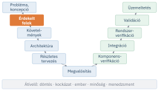
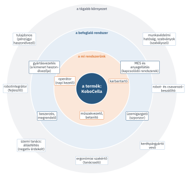
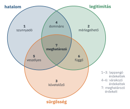
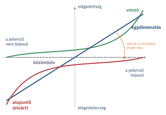
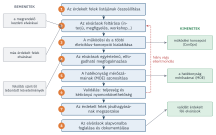

A fejezet feldolgozása után képes leszel:
- meghatározni, kik egy rendszer érdekelt felei, és megkülönböztetni a megrendelőt, a felhasználót és a további érdekelteket;
- rendszerezetten azonosítani egy fejlesztés érdekelt feleit az életciklus-szakaszok és a hagymamodell segítségével, a „csendes” és a negatív érdekelteket is beleértve;
- priorizálni az érdekelt feleket a hatalom–érdekeltség rács és a fontossági (szaliencia-) modell alapján, és mindegyikhez bevonási stratégiát rendelni;
- kiválasztani és alkalmazni az elvárások feltárásának megfelelő módszereit (interjú, megfigyelés, workshop, kérdőív, adatelemzés, prototípus);
- Kano-kérdőívvel osztályozni az elvárásokat, és kiszámítani az elégedettségi együtthatókat;
- az elvárásokból szükséglet–cél–célkitűzés rendszert és a hatékonyság mérőszámait (MOE) levezetni.
A V-modell bal ága az érdekelt felekkel kezdődik (2.4. ábra). Ennek egyszerű oka van: egy rendszer akkor sikeres, ha valakinek értéket teremt, és nem árt indokolatlanul másoknak. Ha nem tudjuk, kik ezek a „valakik” és „mások”, akkor a legjobb műszaki megoldás is a semmibe vezethet.
A fejezet négy kérdésre épül:
- Kik az érdekelt felek, és miért nem elég a megrendelőre figyelni?
- Hogyan azonosíthatjuk őket rendszerezetten, hogy senki fontos ne maradjon ki?
- Kire mennyi figyelmet fordítsunk?
- Hogyan tárjuk fel, osztályozzuk és fogalmazzuk meg az elvárásaikat úgy, hogy a következő lépésben (6. fejezet) mérhető követelmények születhessenek belőlük?
A fejezet végén az érdekelt felek elvárásait a hatékonyság mérőszámaivá alakítjuk. Ezek lesznek a validáció mércéi a V jobb ágán.
5.1. Kik az érdekelt felek?
Az érdekelt fél (stakeholder) fogalma a stratégiai menedzsmentből érkezett a mérnöki gyakorlatba. R. Edward Freeman klasszikus meghatározása szerint érdekelt fél minden olyan csoport vagy egyén, amely befolyásolni tudja a szervezet céljainak elérését, vagy amelyet ez befolyásol (Freeman 1984). Az ISO/IEC/IEEE 15288 szabvány a rendszerfejlesztésre szabva fogalmaz: érdekelt fél az az egyén vagy szervezet, akinek joga, részesedése, igénye vagy érdeke fűződik a rendszerhez, illetve ahhoz, hogy a rendszer az igényeinek és elvárásainak megfelelő tulajdonságokkal rendelkezzen (ISO/IEC/IEEE 2023).
Mindkét definíció kétirányú. Érdekelt az is, aki hat a rendszerre (finanszírozza, engedélyezi, megépíti), és az is, akire a rendszer hat (használja, elszenvedi a zaját, elveszíti miatta a munkáját). A rendszermérnöki gyakorlatban három csoportot érdemes megkülönböztetni.
- A megrendelő az, aki a terméket kéri és jellemzően fizet érte. Az, hogy ki a megrendelő, a termékszerkezet szintjétől függ. Az ISO/IEC/IEEE 15288 megrendelő és szállító szerepekben gondolkodik, és ezek a szerepek a termékszerkezet minden szintjén, akár egy szervezeten belül is megjelennek (ISO/IEC/IEEE 2023, 6.1. szakasz). A rendszer legfelső szintjén a vásárló szervezet a megrendelő, egy alrendszer fejlesztője számára viszont az a csapat, amely az alrendszert a nagyobb egységbe integrálja.
- A felhasználók és üzemeltetők azok, akik a rendszert közvetlenül működtetik vagy használják. Ők érzékelik leginkább a rendszer erősségeit és hibáit. Gyakran mégsem ők döntenek a beszerzésről.
- A további érdekelt felek tágabb kereteket szabnak (hatóságok, szabványalkotók), életciklus-szolgáltatásokat nyújtanak (karbantartók, beszállítók, hulladékkezelők), vagy a rendszer hatásait viselik (szomszédok, a környezet, a jövő nemzedékei).
A három fogalmat a mindennapi nyelv gyakran összemossa. A rendszermérnökségben azonban mást jelentenek, és a különbség a V-modell lépéseit is tükrözi.
- Igény (szükséglet): az a probléma vagy hiány, amelyet az érdekelt fél megoldani szeretne. Megoldásfüggetlen: „biztonságosan és fáradság nélkül akarok feljutni a dombon lévő egyetemre”.
- Elvárás: az érdekelt fél elképzelése arról, mit és milyen feltételekkel nyújtson a rendszer. Lehet minőségi és pontatlan: „legyen mindig kerékpár a közelben”.
- Követelmény: a rendszerre vonatkozó egyértelmű, mérhető, ellenőrizhető állítás, amelyet az elvárásokból vezetünk le: „csúcsidőben az állomások legalább 90%-án legyen legalább két kölcsönözhető kerékpár”. A követelményekkel a 6. fejezet foglalkozik.
Miért nem elég a megrendelőre figyelni? Mert a megrendelő csak egy hang a sok közül, és sokszor nem is ismeri a többiek szempontjait. Az érdekelt felek igényeinek feltárása a V-modell első technikai lépése, és minden további munka erre épül (ISO/IEC/IEEE 2023, 6.4.2. szakasz). Ha a megrendelő, a többi érdekelt fél és a rendszermérnök a projekt elején közösen rögzíti, mit fog tudni a termék, azzal megelőzhető, hogy a követelmények a fejlesztés során ellenőrizetlenül bővüljenek (az angol szakirodalom ezt requirements creep néven ismeri). A kimaradt érdekelt fél nem tűnik el. Később jelentkezik, jellemzően a legrosszabb pillanatban: a hatósági engedélyezésnél, az üzembe helyezéskor vagy egy sajtóhírben.
Az önkormányzat projektcsapata az első megbeszélésen négy érdekelt felet sorolt fel: a város vezetését, az üzemeltetőt, a „felhasználókat” és a közlekedési társaságot. Egy órás, rendezett gondolkodás után a lista harmincnál több szereplőre bővült. Ide kerültek többek között:
- az idősebb és a mozgáskorlátozott lakók;
- a belvárosi boltosok, akik a dokkolók helyét féltik;
- a gyalogosok, akiket a járdára hagyott kerékpárok zavarnak;
- a rendőrség;
- az energiaszolgáltató;
- a kerékpárokat rongáló csoportok.
A felhasználók csoportja is szétvált diákokra, ingázókra és turistákra, mert eltérő a napszakos használatuk, a fizetési szokásuk és a technikai jártasságuk. A következő szakasz azt mutatja meg, hogyan lehet ezt a bővítést szisztematikusan, nem pedig szerencsén múlóan elvégezni.
5.2. Az érdekelt felek rendszerezett azonosítása
Az érdekelt felek azonosítása kreatív és fegyelmezett munka egyszerre. A kreativitás ahhoz kell, hogy a nem nyilvánvaló szereplők is eszünkbe jussanak, a fegyelem ahhoz, hogy a keresés teljes legyen. Három, egymást kiegészítő nézőpont segít ebben: az életciklus, a hagymamodell és néhány célzott ellenőrző kérdés.
5.2.1. Az életciklus nézőpontja
Az érdekelt felek köre a rendszer életciklusa során változik. Az ISO/IEC/IEEE 15288 szabvány ezért azt írja elő, hogy azokat az érdekelt feleket kell azonosítani, akiknek a rendszer teljes életciklusa során érdekük fűződik hozzá (ISO/IEC/IEEE 2023, 6.4.2. szakasz). A 5.1. táblázat a 2.1. szakasz életciklus-szakaszai szerint sorolja fel a jellemző érdekelteket. Ha a listánkon nincs olyan szereplő, aki a gyártással, a karbantartással vagy a kivonással foglalkozik, akkor valószínűleg kihagytunk valakit.
| Életciklus-szakasz | Jellemző érdekelt felek |
|---|---|
| Koncepció | Szponzor és stratégiai döntéshozók, megrendelő, potenciális felhasználók, finanszírozók, szabályozó hatóságok |
| Fejlesztés | Megrendelő, mérnöki szakterületek, biztonsági és munkavédelmi szakemberek, beszállítók, gyártás-előkészítés, tesztelők |
| Gyártás | Gyártás, minőségügy, logisztika, beszállítók, munkavállalók és érdekképviseletük |
| Használat | Felhasználók és üzemeltetők, ügyfélszolgálat, a kimenet haszonélvezői, a rendszer hatásait viselő szomszédok |
| Támogatás | Karbantartók, alkatrészellátás, betanítók, szoftverfrissítést végzők |
| Kivonás | Hulladékkezelők és újrahasznosítók, környezetvédelmi hatóságok, a közvélemény |
5.2.2. A hagymamodell
Ian Alexander a rendszer köré rajzolt koncentrikus körökkel, „hagymával” rendszerezi az érdekelt feleket (Alexander 2005). A középpontban maga a termék áll, amely önmagában nem érdekelt fél. Körülötte három gyűrű helyezkedik el (5.1. ábra).
- A mi rendszerünk gyűrűjében azok vannak, akik a terméket közvetlenül működtetik: a napi kezelők, a karbantartók és az üzemeltetést segítők (betanítók, ügyfélszolgálat). A termék és ezek a szerepek együtt alkotják azt a működő rendszert, amely a szolgáltatást ténylegesen nyújtja.
- A befoglaló rendszer gyűrűjébe tartoznak a termék kimenetének haszonélvezői, a kapcsolódó rendszerekért felelősök, a megrendelő és a projekt szponzora, aki a fejlesztést elindítja, finanszírozza és védi.
- A tágabb környezet gyűrűjében találjuk a pénzügyi és a politikai haszonélvezőket, a szabályozókat, a fejlesztőket, a tanácsadókat, a beszállítókat, valamint a negatív érdekelteket. Ők azok, akiknek a rendszer árthat, vagy akik ártani akarnak neki.

A hagymamodell legfőbb haszna, hogy szerepekben gondolkodtat, nem személyekben. Ugyanaz a személy több szerepben is megjelenhet: egy műszakvezető egyszerre lehet kezelő, betanító és a változtatással szembeni ellenállás hangja. Egy szerepet pedig több csoport is betölthet. Alexander megfigyelése szerint a projektek kudarca gyakran nem rossz követelményekből fakad, hanem abból, hogy egy szerep nézőpontja teljesen kimaradt. Ilyenkor a hozzá tartozó forgatókönyvek és követelmények egész csoportja hiányzik (Alexander 2005).
5.2.3. Ellenőrző kérdések
Az alábbi kérdések a „ki maradt ki?” vizsgálatot segítik. Érdemes mindegyiket feltenni, és minden válaszhoz konkrét csoportot vagy szervezetet rendelni.
- Ki fizet a rendszerért, és ki fizeti az üzemeltetését?
- Ki használja naponta, alkalmanként, kivételes helyzetben? Ki használja rendellenes körülmények között (hiba, vészhelyzet, rossz idő)?
- Ki építi, telepíti, karbantartja, frissíti és vonja ki?
- Ki szabályozza, engedélyezi, ellenőrzi?
- Kinek az érdekeit sérti, kit zavar, kinek a munkáját változtatja meg?
- Kinek a rendszerével kapcsolódik? Melyik meglévő folyamatot, adatot, infrastruktúrát érinti?
- Kinek nincs hangja, mégis érinti? Ilyen a természeti környezet, a jövő nemzedékei, a fogyatékossággal élők, a digitálisan kevésbé jártasak.
- Ki akadályozhatja a sikert, ha kimarad (hatóság, munkavállalói érdekképviselet, sajtó, közösségi média)?
Az egyik leggyakoribb hiba, hogy a felhasználókat egyetlen homogén csoportként kezeljük. A VárosiBringa diák felhasználói este és hétvégén, mobilról, bankkártyával fizetnek. Az ingázók reggel és délután, bérlettel. A turisták alkalmanként, idegen nyelvű felületet és egyszerű regisztrációt várnak. Az idősebb lakók számára a nagy betűméret, a stabil kerékpár és a személyes segítség lehetősége a döntő. Ezek a csoportok eltérő elvárásokat, eltérő forgatókönyveket és eltérő követelményeket jelentenek. A felhasználói csoportok jellemzésére a 11. fejezet perszónái adnak eszközt.
5.3. Kire mennyi figyelmet? Az érdekelt felek priorizálása
Harminc érdekelt fél mindegyikével nem lehet ugyanolyan intenzitással foglalkozni. A priorizálás nem azt jelenti, hogy egyes érdekelteket figyelmen kívül hagyunk. Azt jelenti, hogy tudatosan választjuk meg, kit vonunk be a döntésekbe, kit tájékoztatunk, és kinek a helyzetét figyeljük. Két egymást kiegészítő eszközt mutatunk be.
5.3.1. A hatalom–érdekeltség rács
A rács az érdekelt feleket két szempont szerint helyezi el: mekkora a hatalmuk (befolyásuk) a rendszer sorsára, és mekkora az érdekeltségük, vagyis mennyire foglalkoztatja őket a rendszer. Az ötletet Mendelow vetette fel a környezetfigyelés kapcsán (Mendelow 1981). A négy negyedet és a hozzájuk tartozó stratégiákat Eden és Ackermann dolgozta ki (Eden és Ackermann 1998; Ackermann és Eden 2011).
- Kulcsszereplők (players, nagy hatalom és nagy érdekeltség): velük szorosan együtt kell dolgozni, és be kell vonni őket a döntésekbe.
- Érintettek (subjects, kis hatalom, nagy érdekeltség): tájékoztatni és bevonni kell őket. Az érdekeiket gyakran csak összefogva tudják érvényesíteni, ezért érdemes számolni a szövetségeikkel.
- Keretadók (context setters, nagy hatalom, kis érdekeltség): elégedettségüket fenn kell tartani, és érdemes felkelteni az érdeklődésüket. Gyakran éppen ők alakítják a projekt környezetét (szabályozás, finanszírozás).
- Tömeg (crowd, kis hatalom és kis érdekeltség): elég figyelemmel kísérni őket, de számolni kell azzal, hogy helyzetük megváltozhat.
Ackermann és Eden arra is felhívja a figyelmet, hogy a rács nem statikus térkép. Egy érdekelt fél helyzete változik, sőt tudatosan változtatható (Ackermann és Eden 2011). Egy támogató, de gyenge érintett csoport megerősíthető, és így kulcsszereplővé válhat. Egy közömbös keretadó érdeklődése felkelthető. Egy esetleges ellenfél pedig korai bevonással semlegesíthető.
A projektcsapat négy tagja egymástól függetlenül pontozta a tizenkét legfontosabbnak ítélt érdekelt felet 1-től 5-ig mindkét szempont szerint. Ezután megbeszélték az eltéréseket, és az átlagot rögzítették (5.2. táblázat). A pontozás szempontjai a következők voltak.
- Hatalom: van-e döntési jogköre (engedély, finanszírozás, szerződés), rendelkezik-e nélkülözhetetlen erőforrással (terület, hálózat, ügyfélkör), és képes-e mozgósítani a közvéleményt.
- Érdekeltség: mennyire változtatja meg a rendszer a mindennapjait vagy az üzleti eredményét, és mennyire foglalkozik vele aktívan.
| Érdekelt fél | Hatalom | Érdekeltség | Negyed | Indoklás (röviden) |
|---|---|---|---|---|
| Önkormányzat | 5,0 | 4,8 | kulcsszereplő | finanszíroz, közterületet biztosít, politikai felelősséget visel |
| Üzemeltető konzorcium | 4,3 | 4,6 | kulcsszereplő | szerződéses partner, az üzleti eredmény az övé |
| Közlekedési társaság | 3,6 | 3,3 | kulcsszereplő | bérletrendszer, átszállópontok; partner és versenytárs is |
| Egyetem | 3,2 | 3,9 | kulcsszereplő | sok potenciális felhasználó, telephelyet adhat |
| Diák felhasználók | 1,9 | 4,5 | érintett | a fő célcsoport, de szervezetlen |
| Akadálymentességi érdekképviselet | 1,6 | 4,1 | érintett | jogi és erkölcsi súly, kis közvetlen hatalom |
| Környezetvédő civilek | 1,25 | 3,45 | érintett | támogatók, a közvéleményt mozgósíthatják |
| Gyalogosok, boltosok | 1,7 | 2,6 | tömeg | a járdahasználat miatt később felerősödhet |
| Helyi média | 2,3 | 1,6 | tömeg | egy-egy rossz hír felnagyíthatja a problémákat |
| Energiaszolgáltató | 3,4 | 1,4 | keretadó | hálózati csatlakozás, töltési díjak |
| Közlekedési hatóság | 4,5 | 1,9 | keretadó | jóváhagyások, közúti szabályok |
| Rendőrség | 3,5 | 2,1 | keretadó | közterületi rend, lopások, balesetek |
Az eredményt a 5.2. ábra mutatja. Két tanulság rögtön adódik. Az akadálymentességi érdekképviselet és a környezetvédők érintettek: kis hatalmuk miatt könnyű lenne őket csak tájékoztatni. Korai bevonásukkal azonban a projekt hiteles szövetségeseket nyerhet, és elkerülheti a későbbi, költséges áttervezést, például a dokkolók akadálymentes kialakításánál. A gyalogosok és a boltosok ma a tömegbe tartoznak, de ha a kerékpárok elárasztják a járdákat, gyorsan érintettekké, a helyi média segítségével akár keretadókká válhatnak.
5.3.2. A fontossági (szaliencia-) modell
A hatalom–érdekeltség rács egyszerű és szemléletes, de két fontos szempontot nem lát: azt, hogy jogos-e az érdekelt fél követelése, és azt, hogy mennyire sürgető. Mitchell, Agle és Wood ezért három tulajdonság alapján határozza meg, mennyire „fontos” (szalienciás) egy érdekelt fél a döntéshozók számára (Mitchell, Agle, és Wood 1997):
- hatalom: képes-e elérni, hogy akaratát érvényesítse (kényszerrel, erőforrásokkal vagy szimbolikus eszközökkel);
- legitimitás: társadalmilag elfogadott, jogos-e a követelése (törvény, szerződés, erkölcsi jog);
- sürgősség: mennyire időkritikus a követelése, és mennyire fontos neki.
A három tulajdonság kombinációi hét érdekeltfél-osztályt adnak (5.3. ábra, 5.3. táblázat). Minél több tulajdonság jellemző valakire, annál nagyobb figyelmet kap a döntéshozóktól. A modell legfontosabb tanulsága azonban a dinamika. Az érdekelt fél egyik osztályból a másikba léphet, ha megszerez egy tulajdonságot, és ez a projekt szempontjából előre jelezhető kockázat.

| Osztály (angol név) | Tulajdonságok | Példa a futó esetekből |
|---|---|---|
| Szunnyadó (dormant) | hatalom | Az anyavállalat központi beszerzése, amely jelenleg nem foglalkozik a KoboCellával, de leállíthatja a beruházást |
| Mérlegelhető (discretionary) | legitimitás | A ForgácsTech egyik kisebb vevője, amely szívesen látna online rendelési nyomkövetést |
| Követelőző (demanding) | sürgősség | Egy VárosiBringa-dokkoló melletti lakó, aki minden nap panaszt tesz a zaj miatt |
| Domináns (dominant) | hatalom + legitimitás | A munkavédelmi hatóság a KoboCella esetében |
| Veszélyes (dangerous) | hatalom + sürgősség | A VárosiBringa kerékpárjait szervezetten rongáló csoport |
| Függő (dependent) | legitimitás + sürgősség | A KoboCella operátorai, akiknek egészségi panaszai jogosak és sürgetőek, de döntési hatalmuk nincs |
| Meghatározó (definitive) | mindhárom | A KoboCella üzemigazgatója (szponzor, határidővel), vagy az operátorok, ha az üzemi tanács felkarolja ügyüket |
Az operátorok kezdetben függő érdekeltek: követelésük, a fizikai terhelés csökkentése, legitim és sürgető, de hatalmuk nincs. Ha az üzemi tanács felkarolja az ügyet, és munkavédelmi vizsgálatot kezdeményez, az operátorok hatalmat is szereznek, és meghatározó érdekeltté válnak. A projektcsapat ezt a fordulatot nem kivárja, hanem megelőzi. Két operátort a kezdetektől bevon a cella kialakításába. Ez nemcsak a konfliktust csökkenti: a tapasztalt operátorok olyan rejtett tudást hoznak (például a fedél illesztésének apró trükkjeit), amely nélkül a funkciómegosztás rossz lenne (12. fejezet).
A két modell eredménye végül egy bevonási tervben összegződik. A terv minden érdekelt félhez megadja:
- a bevonás módját (közös döntés, konzultáció, tájékoztatás, figyelés);
- a csatornát;
- a gyakoriságot;
- a felelős kapcsolattartót.
A Gyakorlati útmutató Hatalom–érdekeltség és fontossági elemzés eszközlapja ehhez sablont is ad.
5.4. Az elvárások feltárása
Ha tudjuk, kik az érdekelt felek, meg kell tudnunk, mit várnak a rendszertől. Ez nehezebb, mint amilyennek látszik. Az emberek nem mindig tudják megfogalmazni, mire van szükségük. Gyakran egy megoldást mondanak a probléma helyett. A legfontosabb elvárásaikat pedig sokszor meg sem említik, mert annyira magától értetődőnek tartják őket. A feltárásnak ezért több módszere van, és a jó gyakorlat ezeket kombinálja (5.4. táblázat).
| Módszer | Erősségek | Korlátok | Mikor különösen hasznos? |
|---|---|---|---|
| Dokumentumelemzés | Strukturált információ; nem igényli az érdekeltek idejét | Elavult lehet; nem a megfelelő részletességű | Korai tájékozódás, szabályozási háttér |
| Helyszíni megfigyelés | Gazdag, a környezetbe ágyazott kép; rejtett tudás feltárása | Időigényes; a megfigyeltek másképp viselkedhetnek; kevés eset | Munkafolyamatok, kezelési helyzetek |
| Interjú | Részletes, mély megértés | Az érdekeltek idejét igényli; több kör kell | Kulcsszereplők, szakértők, konfliktusok feltárása |
| Workshop | Az eltérő nézetek közvetlen ütköztetése és feloldása | Sok érdekelt egyidejű részvételét igényli | Ellentmondó elvárások, közös célkép |
| Kérdőív | Sok válaszadó, számszerűsíthető eredmény | Új szempontot ritkán tár fel; alacsony válaszarány | Elvárások súlyozása, Kano-elemzés |
| Adatelemzés, automatikus feltárás | Nagy esetszám, objektív adatok | Adatminőség; csak a meglévő működést mutatja | Működő rendszer vagy folyamat fejlesztése |
| Prototípus, makett | Konkrét visszajelzés; a ki nem mondott elvárások felszínre kerülnek | Korán egy megoldás felé terelhet | Kezelőfelületek, ergonómia, szolgáltatás-élmény |
5.4.1. Igény a megoldás mögött
A feltárás egyik legfontosabb készsége, hogy a kimondott megoldás mögött meghalljuk a valódi igényt. Ha egy érdekelt fél megoldást mond, mindig érdemes megkérdezni: mit tenne lehetővé ez a megoldás, és miért fontos ez? Ez nem jelenti a javaslat elutasítását. Azt jelenti, hogy a megoldást az igényhez mérjük, és nyitva hagyjuk a lehetőséget más, esetleg jobb megoldások előtt.
Az egyik interjúban egy tapasztalt CNC-gépkezelő határozottan kijelentette, hogy minden gép mellé tablet kell. A beszélgetés során kiderült, mi áll e mögött:
- naponta többször is az irodába kell mennie a következő rendelés műhelyrajzáért;
- a papírrajzok között előfordul, hogy nem a legfrissebb változat van nála;
- a szerszámcseréhez szükséges adatokat egy füzetben vezeti.
A valódi igény tehát így szól: „a következő feladat aktuális rajzához és technológiai adataihoz a gép mellől, keresgélés nélkül akarok hozzáférni”. Erre a tablet csak az egyik lehetséges válasz. Ugyanígy szóba jöhet a gépvezérlőn megjelenő munkautasítás vagy egy közös terminál a gépcsoportnál. Az igény megfogalmazása a változatok összevetésének lehetőségét is megnyitja (10. fejezet).
5.4.2. Az interjú gyakorlata
Az interjú a leggyakrabban használt feltárási módszer. Néhány bevált szabály jelentősen javítja az eredményét.
- Készülj fel, de ne kérdőívet olvass fel. Egy rövid témavázlat jobb, mint egy merev kérdéssor.
- Konkrét esetekről kérdezz. A „Hogyan szokta…?” kérdés általánosságokat hoz. A „Mesélje el, legutóbb mi történt, amikor…” kérdés valós helyzetet, valós problémákat.
- Kerüld a sugalmazó kérdéseket. A „Ugye fontos lenne, ha…?” kérdésre szinte mindenki igennel felel.
- Kérdezd meg, miért – türelmesen, akár többször is –, amíg a megoldástól el nem jutsz az igényig.
- Kérdezz a kivételekről. Mi történik hiba, rossz idő, csúcsidő, betegség esetén? A rendellenes helyzetek gyakran a legfontosabb követelményeket hozzák.
- Rögzíts szó szerint, és az interjú végén foglald össze, amit megértettél. Az összefoglalót küldd vissza jóváhagyásra. Ez az elvárás első validálása.
A nagy nyelvi modellek gyorsan készítenek hosszú listákat az érdekelt felekről és tipikus elvárásaikról, és interjúvázlatok, kérdőívek megfogalmazásában is segíthetnek. Ez hasznos ellenőrző lista lehet, különösen a „ki maradt ki?” kérdéshez. Két korlátjukat azonban látni kell. Listáik a tipikusat adják vissza, nem a konkrét helyzetet: a helyi szereplők, a nem nyilvános konfliktusok és a kimondatlan érdekek nem szerepelnek bennük. Másodszor a modell válasza nem forrás. Egy érdekelt fél elvárását csak maga az érdekelt fél erősítheti meg. A Gyakorlati útmutató mintapromptjai ezért a modell kimenetét mindig emberi ellenőrzéssel és az érdekeltekkel való egyeztetéssel kapcsolják össze.
5.5. Az elvárások osztályozása: a Kano-modell
Nem minden elvárás egyforma. Vannak, amelyeknek a hiánya felháborodást kelt, a megléte viszont senkit sem lelkesít. Vannak, amelyek minél jobban teljesülnek, annál elégedettebb a felhasználó. És vannak, amelyekre senki sem számít, de ha megjelennek, meglepetésszerű örömet okoznak. Noriaki Kano és munkatársai 1984-ben megjelent modellje ezt a nem lineáris összefüggést teszi kezelhetővé (Kano és mtsai. 1984). A modell a termékjellemzőket aszerint osztályozza, hogyan függ az elégedettség a jellemző teljesülésétől (5.4. ábra).
- Alapvető (elvárt) jellemzők (must-be): hiányuk erős elégedetlenséget okoz, meglétük viszont csak a semleges állapotot biztosítja. Ezek a piacra lépés feltételei.
- Egydimenziós jellemzők (one-dimensional): az elégedettség nagyjából arányosan nő a teljesülés mértékével. Erről szólnak a versenytársakkal való összehasonlítások.
- Vonzó jellemzők (attractive): hiányukat senki sem kéri számon, meglétük viszont kiemelkedő elégedettséget okoz.
- Közömbös jellemzők (indifferent): sem meglétük, sem hiányuk nem befolyásolja érdemben az elégedettséget.
- Fordított jellemzők (reverse): egyesek számára éppen a hiányuk kívánatos.

Az osztályok nem állandók. A ma vonzó jellemzőből idővel egydimenziós, majd alapvető elvárás lesz, ahogy a felhasználók hozzászoknak. A valós idejű elérhetőség jelzése a közösségi kerékpárrendszerekben néhány éve még újdonság volt, ma már inkább elvárásnak számít. Ezt az életciklus-jelenséget a szakirodalom külön is vizsgálta (Löfgren, Witell, és Gustafsson 2011). A gyakorlati következmény az, hogy a Kano-elemzést időről időre meg kell ismételni.
5.5.1. A Kano-kérdőív és kiértékelése
Az osztályozáshoz jellegzetes kérdőívet használnak (Berger és mtsai. 1993). Minden jellemzőről két kérdést teszünk fel:
- funkcionális kérdés: „Mit érezne, ha a kerékpár valós idejű elérhetősége látszana az alkalmazásban?”
- diszfunkcionális kérdés: „Mit érezne, ha a kerékpár valós idejű elérhetősége nem látszana az alkalmazásban?”
Mindkét kérdésre öt válasz közül lehet választani: tetszene; elvárom, magától értetődő; közömbös; elviselném; nem tetszene. A két válasz kombinációja a 5.5. táblázat szerint adja a jellemző osztályát az adott válaszadónál.
| Funkcionális \ diszfunkcionális | Tetszene | Elvárom | Közömbös | Elviselném | Nem tetszene |
|---|---|---|---|---|---|
| Tetszene | K | V | V | V | E |
| Elvárom | F | Kö | Kö | Kö | A |
| Közömbös | F | Kö | Kö | Kö | A |
| Elviselném | F | Kö | Kö | Kö | A |
| Nem tetszene | F | F | F | F | K |
A válaszadók osztálybesorolásait jellemzőnként összesítjük. A jellemző osztálya jellemzően a leggyakoribb kategória. Ha két kategória közel azonos gyakoriságú, az a felhasználói csoportok eltérő ízlésére utal, és érdemes a csoportokat külön elemezni. Az eredmény kifejezőbb, ha kiszámítjuk az elégedettségi együtthatókat is (Berger és mtsai. 1993). A képletekben , , és a vonzó, az egydimenziós, az alapvető és a közömbös besorolások száma (az angol szakirodalom ugyanezt , , és betűkkel jelöli):
A (0 és 1 között) azt mutatja, mennyire növeli az elégedettséget a jellemző megléte. A (−1 és 0 között) azt, mennyire csökkenti a hiánya. A fordított és a kétséges válaszokat a képlet nem veszi figyelembe.
A projektcsapat 120 lakóval töltetett ki Kano-kérdőívet öt lehetséges szolgáltatásjellemzőről. A válaszok összesítését és az együtthatókat a 5.6. táblázat mutatja (szemléltető adatok).
| Jellemző | V | E | A | Kö | F | K | Osztály | ||
|---|---|---|---|---|---|---|---|---|---|
| Megbízható zár és kölcsönzés | 6 | 22 | 80 | 10 | 0 | 2 | alapvető | 0,24 | −0,86 |
| Valós idejű elérhetőség az alkalmazásban | 18 | 62 | 28 | 10 | 0 | 2 | egydimenziós | 0,68 | −0,76 |
| Közös bérlet a helyi buszokkal | 58 | 24 | 8 | 26 | 2 | 2 | vonzó | 0,71 | −0,28 |
| Telefontöltő a kormányon | 30 | 10 | 4 | 70 | 4 | 2 | közömbös | 0,35 | −0,12 |
| Hangjelzés a kerékpár indulásakor | 6 | 6 | 4 | 54 | 46 | 4 | közömbös (sok fordított) | 0,17 | −0,14 |
Nézzük például a közös bérletet. Itt , , , , így a nevező . Ebből és . A jellemző tehát nagy elégedettséget okozhat, hiánya viszont alig okoz elégedetlenséget: tipikus vonzó jellemző.
A tanulságok a tervezés számára:
- A megbízható zár és kölcsönzés alapvető. Hiánya súlyos elégedetlenséget okoz (), túlteljesítése viszont nem hoz többletelégedettséget. A cél a biztos teljesítés, nem a kiemelkedés.
- A valós idejű elérhetőség egydimenziós. Itt érdemes a versenyképes szintet keresni, mert minden javulás megtérül az elégedettségben.
- A közös bérlet vonzó. Nem kötelező, de a projekt egyik leghatásosabb megkülönböztető eleme lehet, és ráadásul a közlekedési társaság, egy kulcsszereplő együttműködését is igényli.
- A telefontöltő a válaszadók többségének közömbös. Erőforrást csak akkor érdemes rá fordítani, ha olcsó.
- A hangjelzésnél a közömbös és a fordított válaszok aránya közel azonos. Ez megosztottságra utal. Érdemes megvizsgálni, mely csoportok utasítják el (például a csendes lakóövezetek lakói), és lehet-e a jelzést helyzettől függővé tenni.
A Kano-modell jól kapcsolódik a következő lépésekhez. Az osztályok segítenek a vevői elvárások súlyozásában a minőség házában (7. fejezet). Matzler és Hinterhuber ezt az integrációt kifejezetten javasolja (Matzler és Hinterhuber 1998). A modell a koncepciók értékelésében is segít (10. fejezet). A Gyakorlati útmutató Kano-elemzés eszközlapja kérdőívsablont, kiértékelő táblázatot és egy interaktív kalkulátort is tartalmaz.
5.6. Az elvárásoktól a mérhető célokig
Az érdekelt felek elvárásai még nem követelmények. Pontatlanok, gyakran ellentmondanak egymásnak, és nem mindig mérhetők. A V-modell második lépésének feladata, hogy ezekből egy egyeztetett, nyomon követhető és jóváhagyott elvárásrendszer legyen, amely a követelmények meghatározásának bemenete. Az ISO/IEC/IEEE 15288 szabvány erre önálló folyamatot határoz meg (ISO/IEC/IEEE 2023, 6.4.2. szakasz; NASA 2016, 4.1. szakasz). Tevékenységeit és feladatait nyolc lépésbe rendezve a 5.5. ábra mutatja.

5.6.1. Szükséglet, cél, célkitűzés
Az elvárások rendezésének bevált kerete a szükséglet–cél–célkitűzés hierarchia. Kidolgozásához az INCOSE igény- és követelménykezelési útmutatója részletes eljárást ad: a probléma megfogalmazásából indul, és a küldetésen, a célokon és a célkitűzéseken át jut el a mérőszámokig (Wheatcraft, Ryan, és Edner Katz 2025).
- A szükséglet egyetlen állítás arról, milyen problémát akarunk megoldani. Nem tartalmazza a megoldást.
- A célok kifejtik, mit kell elérni a szükséglet kielégítéséhez. Nem kell számszerűeknek lenniük, de lehetővé kell tenniük annak megítélését, hogy elértük-e őket.
- A célkitűzések konkrét, mérhető célszintek, amelyek egy-egy célhoz kapcsolódnak.
A jó célkitűzés Doran sokat idézett szempontjai szerint SMART (Doran 1981):
- konkrét (specific): egy meghatározott eredményre vonatkozik, és azt mondja meg, mit kell elérni, nem azt, hogyan;
- mérhető (measurable): van mérőszáma és célértéke, így a teljesülése ellenőrizhető;
- hozzárendelhető (assignable): megmondható, ki felel az eléréséért;
- reális (realistic): a rendelkezésre álló erőforrásokkal elérhető, de nem triviális;
- időhöz kötött (time-related): kijelöli, mikorra kell teljesülnie.
A hierarchia ereje a nyomonkövethetőségben rejlik. Ha egy cél nem szolgál egyetlen szükségletet sem, vagy egy célkitűzés egyetlen célt sem, akkor nem tartozik a rendszerbe.
Szükséglet: Bakonyvár lakói és látogatói a belvárosi, legfeljebb néhány kilométeres utakat autó nélkül, a domborzattól függetlenül, kényelmesen tehessék meg.
Célok és célkitűzések (részlet):
- C1 – Elérhetőség: a kerékpár ott legyen, ahol szükség van rá.
- Csúcsidőben az állomások legalább 90%-án legyen legalább két kölcsönözhető kerékpár.
- C2 – Hatás: a rendszer valóban kiváltson autós utakat.
- A bevezetést követő második évben a belvárosi, 3 km-nél rövidebb autós utak aránya legalább 10%-kal csökkenjen a kiinduló felméréshez képest.
- C3 – Befogadás: a rendszer mindenki számára használható legyen.
- A 65 év felettiek körében a sikeres első kölcsönzések aránya segítség nélkül is érje el a 85%-ot.
5.6.2. A hatékonyság mérőszámai
A célkitűzések közül azokat, amelyek a rendszer egészének sikerét az érdekelt felek szemszögéből mérik, a hatékonyság mérőszámainak (measures of effectiveness, MOE) nevezzük. A fenti példában a C2 célkitűzés tipikus MOE. Nem azt mondja meg, milyen gyors a kerékpár vagy hány állomás van, hanem azt, hogy a rendszer eléri-e a célját. A MOE-k a validáció mércéi lesznek a V jobb ágán. A teljesítmény mérőszámaival (MOP) és a műszaki teljesítménymutatókkal (TPM), amelyek a MOE-kból vezethetők le, a 6. fejezet foglalkozik.
5.6.3. Ellentmondó elvárások
A VárosiBringa esetében az önkormányzat sűrű állomáshálózatot szeretne, az üzemeltető alacsony beruházási és üzemeltetési költséget, a gyalogosok szabad járdát, az akadálymentességi érdekképviselet pedig azt, hogy egyetlen dokkoló se szűkítse a járdát egy kerekesszék számára szükséges szélesség alá. Az ellentmondások a természetes velejárói minden többszereplős rendszernek. A rendszermérnök feladata nem az, hogy eltüntesse őket, hanem hogy láthatóvá és kezelhetővé tegye őket.
- Tedd explicitté az ellentmondást: melyik elvárás melyikkel ütközik, és miért.
- Keresd a mögöttes érdeket. Az állomássűrűség mögött az elérhetőség igénye áll, amit esetleg kevesebb, de jobb helyen lévő állomás is kielégít.
- Fogalmazd meg mérhetően mindkét oldalt, hogy a változatok összevethetők legyenek.
- Rögzítsd, ki dönt. A döntési jog tisztázása az érdekeltfél-elemzés része, a döntés módszertana a 10. fejezet témája.
A folyamat végén az érdekelt felek jóváhagyják a validált elvárásokat. Ezek alapvonalba kerülnek, és ettől kezdve szabályozott változáskezeléssel módosíthatók (2.5. szakasz). Az érdekelt feleket nemcsak a kezdeti szakaszban, hanem a projekt minden szakaszában érdemes bevonni, mert rendszeres visszajelzésük önkorrekciós visszacsatolásként működik. Az ISO/IEC/IEEE 15288 is előírja, hogy az elemzett követelményeket vissza kell juttatni az érdekelt felekhez, és meg kell erősíttetni velük, hogy igényeiket helyesen rögzítettük (ISO/IEC/IEEE 2023, 6.4.2. szakasz).
- Érdekelt fél mindenki, aki hat a rendszerre, vagy akire a rendszer hat. A megrendelő csak egy közülük. A kimaradt érdekelt fél később, rendszerint drágán jelentkezik.
- Az azonosítást három nézőpont segíti: az életciklus-szakaszok, a hagymamodell szerepei és néhány célzott ellenőrző kérdés. A felhasználókat ne kezeljük egyetlen homogén csoportként.
- A hatalom–érdekeltség rács négy negyedet ad (kulcsszereplők, érintettek, keretadók, tömeg). A fontossági modell a hatalom, a legitimitás és a sürgősség alapján hét osztályt különböztet meg. Mindkettő dinamikus, és bevonási tervben ölt testet.
- Az elvárások feltárására többféle módszer szolgál. A kimondott megoldás mögött mindig a valódi igényt keressük.
- A Kano-modell az elvárásokat alapvető, egydimenziós, vonzó, közömbös és fordított kategóriába sorolja. Az elégedettségi együtthatók a tervezési prioritásokat segítik.
- Az elvárásokból szükséglet–cél–célkitűzés hierarchia és a hatékonyság mérőszámai (MOE) lesznek. Ezek a követelmények forrásai és a validáció mércéi.
- Miért kétirányú az érdekelt fél fogalma? Mondj egy-egy példát a KoboCella esetéből mindkét irányra!
- A hagymamodell melyik gyűrűjébe sorolnád a ForgácsTech gépkezelőit, a MES-szállítót és a vevő minőségügyi auditorát?
- Mi a különbség a hatalom–érdekeltség rács és a fontossági modell szemlélete között? Mit lát az egyik, amit a másik nem?
- Fogalmazd át igénnyé a következő megoldásjavaslatot: „A dokkolókra kell egy érintőképernyő.”
- Egy jellemzőre 100 válasz érkezett: , , , , , . Melyik osztályba tartozik, és mennyi a és a ?
- Miért nem követelmény még egy jól megfogalmazott célkitűzés sem?
Megoldás
- A rendszerre hat például az üzemigazgató (finanszíroz, határidőt szab) és a munkavédelmi hatóság (engedélyez). A rendszer hat az operátorokra (megváltozik a munkájuk és a terhelésük) és az üzemi tanácsra (a munkahelyek jövője miatt).
- A gépkezelők a „mi rendszerünk” gyűrűjébe tartoznak (napi kezelők), a MES-szállító a tágabb környezetbe (fejlesztő vagy beszállító), a vevői auditor a befoglaló rendszerbe vagy a tágabb környezetbe, attól függően, hogy a vevő a kimenet haszonélvezőjeként vagy szabályozóként lép fel.
- A rács két mennyiségi szempont szerint rendez, és a bevonás intenzitását adja meg. A fontossági modell a követelés jogosságát és sürgősségét is vizsgálja, és megmutatja, hogyan léphet egy érdekelt fél egyik osztályból a másikba, például hogyan válhat egy függő érdekelt meghatározóvá.
- Például: „A dokkolónál kölcsönző felhasználó, okostelefon nélkül is, a helyszínen tudjon kerékpárt kölcsönözni és segítséget kérni.” Ezt képernyő, kártyaolvasó vagy telefonos segélyvonal is kielégítheti.
- A leggyakoribb kategória az alapvető (). A nevező , így és .
- Mert az érdekelt fél nézőpontjából fogalmazza meg a kívánt eredményt, és még nem a rendszerre vonatkozó, a megoldás szintjén ellenőrizhető állítás. A célkitűzésekből a követelmények meghatározása során vezetjük le a rendszer által teljesítendő, egyértelmű követelményeket.
Saját fejlesztési feladatodhoz:
- azonosíts legalább tíz érdekelt felet az életciklus-táblázat, a hagymamodell és az ellenőrző kérdések segítségével (legalább hármat a rendszeren kívülről);
- készítsd el a hatalom–érdekeltség rácsot, és jelöld ki a kulcsszereplőket;
- a két legfontosabb érdekelt féllel készíts rövid interjút, és fogalmazz meg legalább öt elvárást igényként;
- fogalmazd meg a szükségletet, legalább három célt és célonként legalább egy mérhető célkitűzést; jelöld meg, melyik MOE.
A sablonokat a Gyakorlati útmutató érdekeltfél-eszközlapjai tartalmazzák.
- Wheatcraft, Ryan, és Edner Katz (2025): az igények feltárásának és a szükséglet–cél–célkitűzés rendszer kidolgozásának részletes útmutatója.
- Alexander (2005): a hagymamodell és az érdekeltfél-szerepek részletes leírása.
- Ackermann és Eden (2011): az érdekelt felek stratégiai kezelése elmélet és gyakorlat alapján.
- Mitchell, Agle, és Wood (1997): a fontossági modell eredeti cikke.
- Berger és mtsai. (1993): a Kano-módszer gyakorlati útmutatója.
- NASA (2016), 4.1. szakasz: az érdekelt felek elvárásainak meghatározása a rendszermérnöki folyamatban.